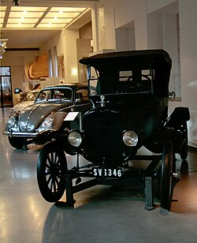

History of cars in general

Crude ideas and designs of automobiles can be traced back to ancient and medieval times.[1][2] In 1649, Hans Hautsch of Nuremberg built a clockwork-driven carriage.[1][3] In 1672, a small-scale steam-powered vehicle was created by Ferdinand Verbiest;[4] the first steam-powered automobile capable of human transportation was built by Nicolas-Joseph Cugnot in 1769.[5][6] Inventors began to branch out at the start of the 19th century, creating the de Rivaz engine, one of the first internal combustion engines,[7] and an early electric motor.[8] Samuel Brown later tested the first industrially applied internal combustion engine in 1826. Only two of these were made.
Development was hindered in the mid-19th century by a backlash against large vehicles, yet progress continued on some internal combustion engines. The engine evolved as engineers created two- and four-cycle combustion engines and began using gasoline. The first modern car—a practical, marketable automobile for everyday use—and the first car in series production appeared in 1886, when Carl Benz developed a gasoline-powered automobile and made several identical copies.[9][10] In 1890, Gottlieb Daimler, inventor of the high-speed liquid petroleum-fueled engine, and Wilhelm Maybach formed Daimler Motoren Gesellschaft. In 1926, the company merged with Benz & Cie. (founded by Carl Benz in 1883) to form Daimler-Benz, known for its Mercedes-Benz automobile brand.
From 1886, many inventors and entrepreneurs got into the "horseless carriage" business, both in America and Europe, and inventions and innovations rapidly furthered the development and production of automobiles. Ransom E. Olds founded Oldsmobile in 1897, and introduced the Curved Dash Oldsmobile in 1901. Olds pioneered the assembly line using identical, interchangeable parts, producing thousands of Oldsmobiles by 1903. Although sources differ, approximately 19,000 Oldsmobiles were built, with the last produced in 1907. Production likely peaked from 1903 through 1905, at up to 5,000 units a year. In 1908, the Ford Motor Company further revolutionized automobile production by developing and selling its Ford Model T at a relatively modest price. From 1913, introducing an advanced moving assembly line allowed Ford to lower the Model T's price by almost 50%, making it the first mass-affordable automobile.